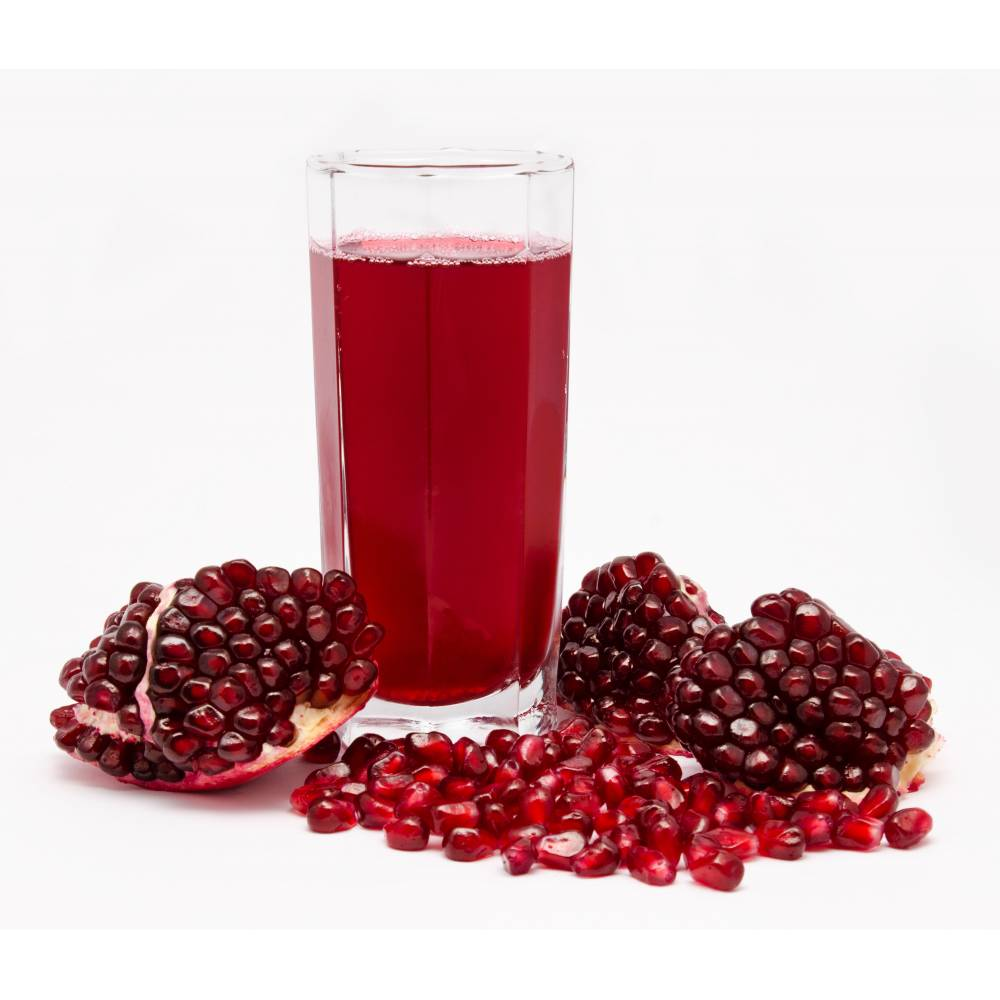
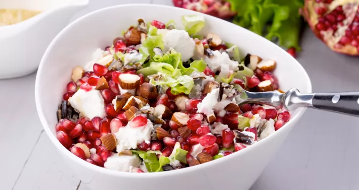
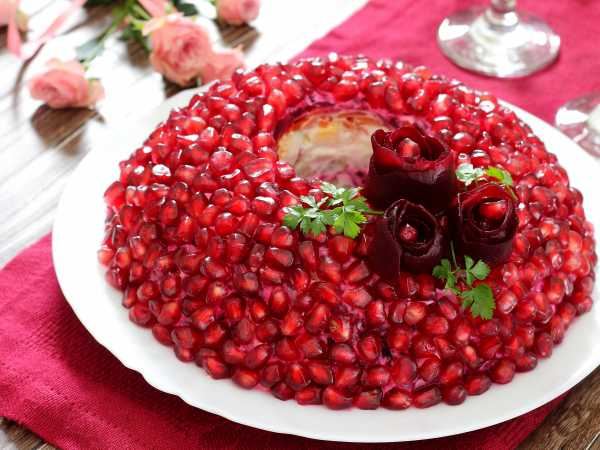

  
Гранат едят в свежем виде, готовят из него варенье, пастилу, сиропы, напитки, вина, мороженое, приправы к различным национальным блюдам.
Зерна граната, благодаря сочной мякоти вокруг семян, имеют кисловатый вкус, похожий на клюквенный, но более сладкий. Они прекрасно сочетаются с салатами из листовых овощей или фруктов. Могут служить как завершающий штрих к блюдам из мяса или птицы, рису или вегетарианскому карри.
Из гранатов получается шикарный гранатовый сок, который хорош не только для приготовления маринадов, соусов, напитков и коктейлей. Например, его иногда используют вместо цитрусового сока, чтобы придать напитку или блюду яркость.
Выпаривая сок из плодов кислых сортов, получают соус наршараб – одну из лучших приправ ко многим кавказским блюдам. Его добавляют в заправки для салатов, смазывают мясо в качестве глазури, добавлять в напитки, используют для соусов и десертов, сбрызгивают жареные или запеченные овощи.
Также из сока готовят гренадин – густой сладкий сироп, применяемый для коктейлей, десертов и иногда для салатов.
Особый вид сахара гранадин получают из молодых корней гранатового дерева. Для него характерен высокая чистота, быстрая кристаллизация, характерный вкус и аромат, благодаря чему такой сахар – хороший ингредиент для кондитерских изделий и халвы.
Сушеные семена граната – это специя анардана в индийской и пакистанской кухне. Чаще всего входит в состав овощных и бобовых блюд.
Нашлось применение даже цветкам граната: с ними заваривают чай, который по вкусу и цвету напоминает каркаде.